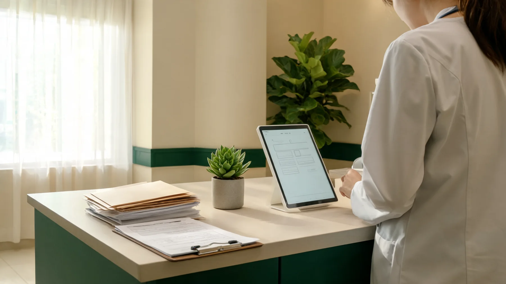
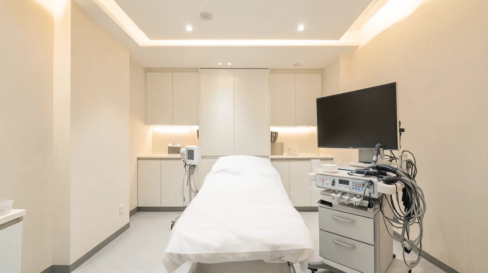
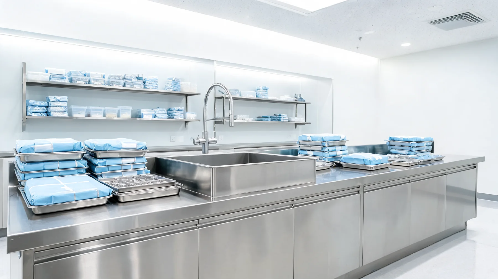
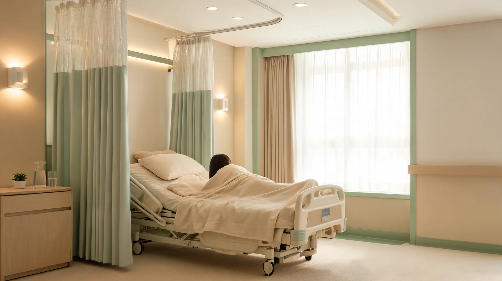

고해상도 영상
점막 상태를 선명하게 확인할 수 있는 검사 환경을 갖추고, 이상소견 발견 시 결과 상담으로 연결합니다.
환자는 장비명을 모르지만 깨끗하고 안정적인 검사 환경을 원합니다.
점막 상태를 선명하게 확인할 수 있는 검사 환경을 갖추고, 이상소견 발견 시 결과 상담으로 연결합니다.
검사 후 세척, 소독, 보관 과정을 분리해 관리하며 감염관리 기준을 환자에게 설명할 수 있게 구성합니다.
검사실과 회복실이 이어지는 동선으로 수면검사 후 안정과 결과 상담을 자연스럽게 연결합니다.
검사 전 확인부터 세척, 소독, 보관, 결과상담까지 단계별로 관리합니다.
문진, 복용약, 수면 여부 확인
의료진 확인 후 검사 시행
검사 후 세척·누수 확인
기준에 따른 소독·보관
결과와 추적주기 안내
문진, 검사, 장비 관리, 회복까지 환자 동선에 맞춰 공간을 안내합니다.




복부, 갑상선, 경동맥 등 부위별 검사 목적을 분리해 안내합니다.
검사 장비, 초음파실, 장비 관리 공간, 회복실을 함께 확인하면 검사 전 불안감을 줄이는 데 도움이 됩니다.
검사 종류와 준비사항을 상담한 뒤 필요한 검사를 예약합니다.